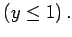
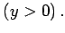
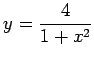
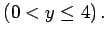

Inhalt Index DeskTop Bronstein

 Funktionen und ihre Darstellung Funktionsbegriff Einige Funktionstypen
Funktionen und ihre Darstellung Funktionsbegriff Einige Funktionstypen


Funktionen heißen nach oben beschränkt, wenn ihre Werte eine bestimmte Zahl (obere Schranke) nicht übertreffen, und nach unten beschränkt, wenn ihre Werte nicht kleiner als eine bestimmte Zahl (untere Schranke) sind. Ist eine Funktion nach oben und nach unten beschränkt, dann nennt man sie schlechthin beschränkt.
| Beispiel A |
|
y=1-x2 ist nach oben beschränkt  |
| Beispiel B |
|
y=ex ist nach unten beschränkt  |
| Beispiel C |
|
|
| Beispiel D |
|
 ist beschränkt  |